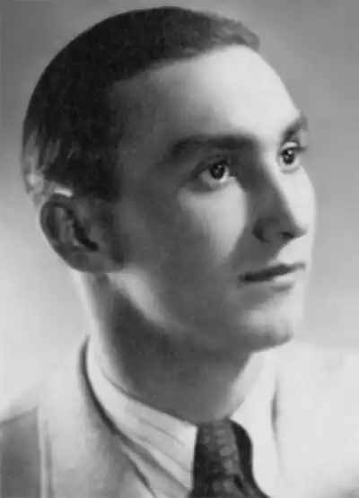

Народився на Покутті в бідній родині. Він був третьою дитиною, мав старшого брата Олексія (1904) і сестру Марію (1912). Сім'я майбутнього письменника проживала в одній невеличкій хатині разом із сім'єю батькового брата. В одній кімнаті на 16 м кв. проживало… десятеро дітей. Василь ріс напівсиротою — батько помер 1921. Мати залишилася з трьома дітьми і, щоб прогодувати малечу, заробляла в людей на хліб шиттям і прядінням.
1930 Василь закінчує сім класів місцевої школи. Саме в школі пише свої перші вірші. Після навчання він був членом, а згодом і керівником хореографічного гуртка при товаристві "Просвіта". 1931 його вперше заарештовують за незначну антиурядову витівку, але незабаром малолітнього Василя відпускають. У вересні 1932 за антиурядову діяльність його знову затримали на три місяці.
В Народному музеї історії і побуту села Іллінців, який облаштував і опікується ним педагог Роман Ризюк, зберігається коломийський журнал "Жіноча доля" за квітень 1933, де опубліковано першу новелу "Великдень іде". Далі була новела "Весна". Під своїми публікаціями Василь Ткачук часто зазначав написання твору — рідне і таке дороге йому село Іллінці. Окрім того, В. Ткачук займався ще й етнографією, адже його дуже цікавили місцеві традиції, обрядові пісні. Журнал "Життя і знання" (ч. 97 за 1935) опублікував його дослідницьку статтю "Весілля на Покутті". Від 1934 В. Ткачук затоваришував з учасниками львівської літературної групи "Дванадцятка", яку організував Анатоль Курдидик. 1937 Василь Ткачук одружується з Марією Януш. Шлюбна церемонія відбулася в церкві Святого Миколая у Львові. У вересні 1939 Ткачук стає студентом Львівського університету імені Івана Франка за наказом Наркомітету УРСР, незважаючи на те, що в письменника не було навіть середньої освіти. На спеціальному пленумі Спілки письменників України 1940 В. Ткачука прийнято в члени письменницької організації разом з такими майстрами слова, як Ірина Вільде, Петро Козланюк, Михайло Яцків. Під час першої радянської окупації Галичини Ткачук за бунтарство в Спілці письменників потрапив у неласку, і секретар спілки не боронив його від призову до Червоної армії, хоч нікого з письменників — ні українців, ні поляків, ні євреїв не призвали. Василь змушений був змінити перо на гвинтівку і, покликаний до лав Радянської армії 1941 року, переживає тяжкі дні відступу. На жаль, ми не знаємо, де саме воював Василь. Проте в архіві Народного музею села Іллінців зберігається копія листа Василя Ткачука до Леоніда Смілянського, датованого 24.08.1942 р., в якому письменник повідомляє, що вже чотирнадцять місяців перебуває в робочій колонії і просить вислати йому журнали та деякі твори. Петро Козланюк у своїх військових щоденниках згадує, що 24 грудня 1942 він зустрічався в Москві з Ткачуком, який зі своєю частиною відправлявся на фронт. 19 жовтня 1944 в бою у Східній Прусії, в селі Шлайвен, у віці 28 років він загинув.